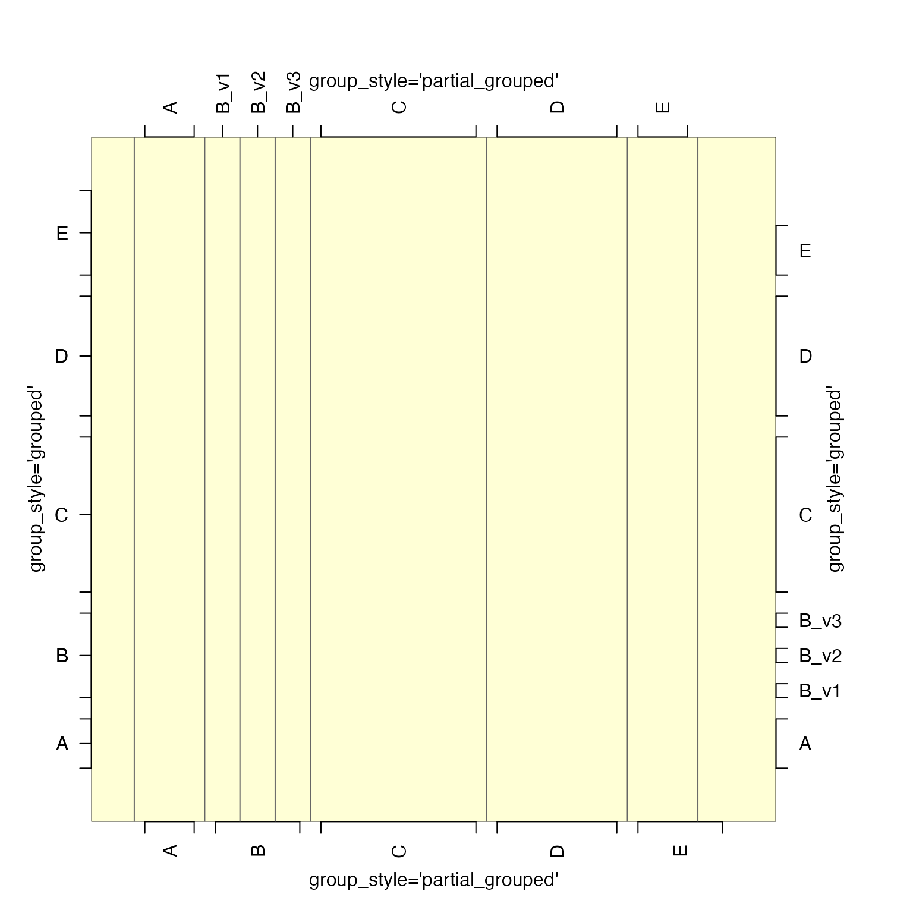

Draw grouped axis labels given a character vector.
groupedAxis(
side = 1,
x,
group_style = c("partial_grouped", "grouped", "centered"),
las = 2,
returnFractions = TRUE,
nudge = 0.2,
do_abline = FALSE,
abline_lty = "solid",
abline_col = "grey40",
...
)This function extends breaksByVector() specifically for
axis labels. It is intended where character labels are spaced
at integer steps, and some labels are expected to be repeated.
Other jam plot functions:
adjustAxisLabelMargins(),
coordPresets(),
decideMfrow(),
drawLabels(),
getPlotAspect(),
imageByColors(),
imageDefault(),
minorLogTicksAxis(),
nullPlot(),
plotPolygonDensity(),
plotRidges(),
plotSmoothScatter(),
shadowText(),
showColors(),
smoothScatterJam(),
sqrtAxis(),
usrBox()
par("mar"=c(4,4,6,6));
b <- rep(LETTERS[1:5], c(2,3,5,4,3));
b2 <- c(b[1:2], makeNames(b[3:5]), b[6:16]);
nullPlot(doBoxes=FALSE,
doUsrBox=TRUE,
xlim=c(0,18),
ylim=c(0,18));
groupedAxis(1, b);
groupedAxis(2, b, group_style="grouped");
groupedAxis(3, b2, do_abline=TRUE);
groupedAxis(4, b2, group_style="grouped");
mtext(side=1, "group_style='partial_grouped'", line=2, las=0);
mtext(side=2, "group_style='grouped'", line=2, las=0);
mtext(side=3, "group_style='partial_grouped'", line=2, las=0);
mtext(side=4, "group_style='grouped'", line=2, las=0);
